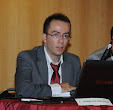

Ο Ιωάννης Παναγιωτόπουλος, δεύτερος εισαχθείς στο τμήμα φυσικοθεραπείας του Τ.Ε.Ι. Αθηνών το 2004, αποκτά το πτυχίο του το 2008 με βαθμό λίαν καλώς. Eίναι πιστοποιημένος ΟEP Leader, από το 2015, και πιστοποιημένος σε τεχνικές IASTM από το 2021. Έχει εργαστεί ως φυσικοθεραπευτής στο Γ.Ν.Νίκαιας, στη Μ.Φ.Η. Ο Άγιος Γεώργιος, στη Μ.Φ.Η. Άγιος Στυλιανός, στη Μ.Φ.Η. Centaurea, και ως επιστημονικός συνεργάτης του Μερόπειου φιλανθρωπικού ιδρύματος. Παράλληλα συνεργάστηκε με αθλητικές ομάδες μπάσκετ όπως του Α.Ο. Παλαιού Φαλήρου (γυναικείο Α1), του Α.Ο. Αιγάλεω (αντρικό Β), του Αθηναϊκού (αντρικό), και του Θριάμβου (γυναικείο). Είναι καθηγητής φυσικοθεραπείας ΙΙΕΚ,και συγγραφέας των βιβλίων Γηριατρική Φυσικοθεραπεία, Φυσικοθεραπεία και Ψυχική Υγεία (Εκδόσεις Ownbook). Δημοσιεύονται κατά καιρούς επιστημονικά άρθρα του στον ηλεκτρονικό τύπο, ενώ έχει συμμετάσχει σε συνέδρια είτε ως ομιλητής είτε ως σύνεδρος. Είναι ιδρυτής των Athens Senior Games, και πρ. Πρόεδρος του Τμήματος Γηριατρικής Φυσικοθεραπείας του Π.Σ.Φ.